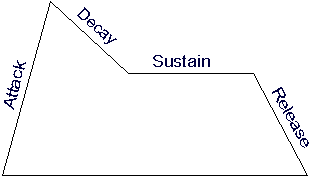

Envelopes
Hans Mikelson
hljmm@werewolf.net
envelop.orc envelop.sco
Introduction
Envelopes are used to control how a sound changes over time. One of the most common envelopes is the amplitude envelope. The amplitude envelope shapes the volume of the sound over time. Envelopes can be used to change other aspects of the sound such as pitch and the amount of filtering.
Attack, decay, sustain and release
The first part of the envelope is called the attack. For an amplitude envelope this would be how long it takes to go from silence to the maximum volume. A drum and a piano usually have short attack times. The next section is called decay. During the decay section the amplitude would decrease from the maximum level to some constant level. Drums have short decay times, a piano might have a slightly longer decay time and a horn longer still. The sustain level is a constant level that the sound maintains during the middle part of the sound. The final part of the envelope is called the release. The release time is the time it takes the sound to fade from the sustain level to silence.

Figure 1
The parts of a typical ADSR envelope.
Linear and exponential
Csound has two basic envelope types, linear and exponential. The points of linear envelopes are connected by straight lines. The points of exponential envelopes are connected by curved lines. In Csound linear envelopes can be defined using linseg and exponential envelopes can be defined using expseg. The points of an exponential envelope must all be either positive or negative. The points of an exponential envelope must not be zero or go from positive to negative values.
Amplitude envelopes
Instrument 1 illustrates how to implement an ADSR amplitude envelope using linseg.
instr 1
idur = p3 ; Duration
iamp = p4 ; Amplitude
ifqc = cpspch(p5) ; Convert pitch to frequency
itable = p6 ; Waveform table
iatt = p7 ; Attack time
idec = p8 ; Decay time
isus = p9 ; Sustain level
irel = p10 ; Release time
; The following code defines the amplitude envelope
aenv linseg 0, iatt, 1, idec, isus, idur-iatt-idec-irel, isus, irel, 0
asig oscil aenv*iamp, ifqc, itable ; Generate the audio signal
outs asig, asig ; Output the result
endin
The linseg opcode takes an odd number of parameters which list a sequence of levels and the times it takes to go from one level to another. In this case the envelope starts at 0 and takes iatt seconds to reach the maximum amplitude. The sound then decays over idec seconds to the level isus. The sustain portion lasts for the duration of the note minus the attack time, decay time and release times. The ending sustain level is again isus. Finally the sound decays to zero over irel seconds. Most synthesizers would define the release time to be after the sound ends. This can be accomplished by adding the following lines before the linseg statement:
p3 = p3 + irel
idur = idur + irel
This is demonstrated in instrument 2.
An amplitude envelope with a very short attack and decay time and a constant sustain envelope is often called a de-click envelope and is used to prevent clicks and pops associated with sudden changes in amplitudes.
adeclick linseg 0, .002, 1, idur-.004, 1, .002, 0
The signal is then multiplied by the de-click envelope before final output.
outs asig*adeclick, asig*adeclick
Csound's linseg opcode is not limited to the ADSR segments found on most synthesizers. Csound envelopes can be made of an arbitrary number of line segments.
Other Envelopes
Envelopes are often applied to pitch and filter cut off frequency. Instrument 4 demonstrates applying a pitch envelope and instrument 5 demonstrates applying an envelope to the cut-off frequency of a resonant low pass filter. In this case expseg is used. Exponential envelopes are often used with frequencies.
Conclusion
Csound has several other envelopes available which will not be discussed here. Some other possible uses of envelopes are for fading in a vibrato effect, cross fading between different wave forms or panning the signal from left to right and others. Csound's envelope opcodes offer the ability to create complex multi-segment envelopes which can really bring your sounds to life. |